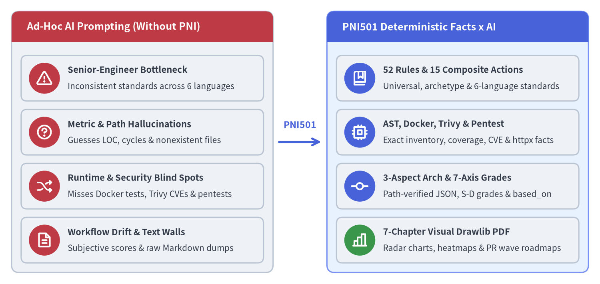
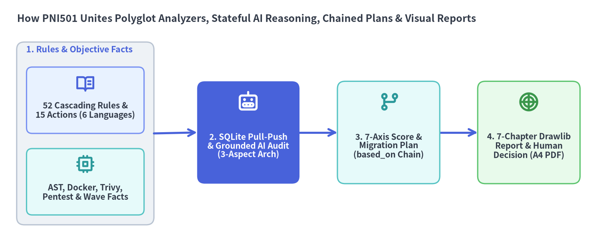

背景とコアコンセプト
Python、Java、PHP、Go、TypeScript、JavaScript にまたがる既存ソフトウェアのモダナイゼーションと継続的な品質維持は、エンジニアリング組織にとって最も投資対効果が高く、かつリスクの大きい課題です。pni501 は、場当たり的な単発 AI プロンプトを、ポリグロット設計規約・静的および隔離コンテナ解析・SQLite Pull-Push 状態管理・Drawlib ビジュアルレポートを統合した決定論的ハーネスへと置き換えます。

Source Code
from drawlib.canvas import save, setup
from drawlib.icons import phosphor
from drawlib.lines import line
from drawlib.smartarts import CardList, Panel
from drawlib.styles import Styles
from drawlib.text import text
setup(width=156, height=74, dpi=150)
left_panel = Panel(
"Ad-Hoc AI Prompting (Without PNI)",
header_variant="filled",
style=Styles.Neutral.patch(shape_r=2.0),
header_style=Styles.DangerFlat,
text_style=Styles.WhiteBold.patch(text_size=12.0),
)
left_panel.draw(xy=(3.0, 3.0), width=68.0, height=68.0)
left_cards = CardList(
style=Styles.Neutral.patch(shape_r=1.5),
text_style=Styles.DarkBold.patch(text_size=10.5),
description_style=Styles.Dark.patch(text_size=10.0),
badge_shape="circle",
badge_style=Styles.DangerFlat,
badge_text_style=Styles.WhiteBold.patch(text_size=10.0),
icon_style=Styles.WhiteBold,
direction="vertical",
spacing=2.2,
)
left_cards.add(
"Senior-Engineer Bottleneck",
"Inconsistent standards across 6 languages",
icon=phosphor.warning,
)
left_cards.add(
"Metric & Path Hallucinations",
"Guesses LOC, cycles & nonexistent files",
icon=phosphor.question,
)
left_cards.add(
"Runtime & Security Blind Spots",
"Misses Docker tests, Trivy CVEs & pentests",
icon=phosphor.shuffle,
)
left_cards.add(
"Workflow Drift & Text Walls",
"Subjective scores & raw Markdown dumps",
icon=phosphor.file_text,
)
left_cards.draw(xy=(5.5, 5.5), width=63.0, height=54.0)
line((72.5, 37.0), (83.5, 37.0), arrow_head="->", style=Styles.PrimaryBold.patch(line_width=2.5))
text((78.0, 41.5), "PNI501", style=Styles.PrimaryBold.patch(text_size=11.0))
right_panel = Panel(
"PNI501 Deterministic Facts x AI",
header_variant="filled",
style=Styles.PrimaryNeutral.patch(shape_r=2.0),
header_style=Styles.PrimaryFlat,
text_style=Styles.WhiteBold.patch(text_size=12.0),
)
right_panel.draw(xy=(85.0, 3.0), width=68.0, height=68.0)
right_cards = CardList(
style=Styles.Neutral.patch(shape_r=1.5),
text_style=Styles.DarkBold.patch(text_size=10.5),
description_style=Styles.Dark.patch(text_size=10.0),
badge_shape="circle",
badge_style=Styles.PrimaryFlat,
badge_text_style=Styles.WhiteBold.patch(text_size=10.0),
icon_style=Styles.WhiteBold,
direction="vertical",
spacing=2.2,
)
right_cards.add(
"52 Rules & 15 Composite Actions",
"Universal, archetype & 6-language standards",
icon=phosphor.book_bookmark,
)
right_cards.add(
"AST, Docker, Trivy & Pentest",
"Exact inventory, coverage, CVE & httpx facts",
icon=phosphor.cpu,
)
right_cards.add(
"3-Aspect Arch & 7-Axis Grades",
"Path-verified JSON, S-D grades & based_on",
icon=phosphor.git_commit,
)
right_cards.add(
"7-Chapter Visual Drawlib PDF",
"Radar charts, heatmaps & PR wave roadmaps",
badge_style=Styles.SuccessFlat,
icon=phosphor.chart_bar,
)
right_cards.draw(xy=(87.5, 5.5), width=63.0, height=54.0)
save()
1. なぜ単発の AI プロンプト監査は実務リポジトリで破綻するのか
エンタープライズのバックエンド、クラウドマイクロサービス、フロントエンド Web アプリケーション、社内開発ツールに至るまで、開発組織は Python、Java、PHP、Go、TypeScript、JavaScript など多様な言語エコシステムを運用しています。こうしたコードベースを安全に保守・リファクタリング・移行するには、構造的健全性・ランタイム動作・セキュリティ態勢に関する客観的かつ再現可能なベースラインが不可欠です。
Code AI Agent（Claude Code、Gemini CLI、Cursor、GitHub Copilot など）はコード読解と変換を劇的に加速させましたが、チャット画面で単発プロンプトとして「このリポジトリを監査して品質を採点して」と依頼する従来のアプローチには、実務運用を阻む 4つの構造的限界 があります：
- シニアエンジニアの属人化とプロンプトのボトルネック：共通アーキテクチャ原則（OWASP ASVS、OpenSSF サプライチェーン衛生、Twelve-Factor App、Google SRE PRR、CLI 設計標準）と、各言語・フレームワーク固有のベストプラクティス（
FastAPI、Spring Boot、Laravel、WordPress、Goモジュール、TypeScript厳格型など）を漏れなくプロンプトで指示するには、毎回スタッフエンジニア級の高度な専門知識が必要になります。 - 定量メトリクスと構造パスのハルシネーション：チャット上でリポジトリを直接読ませると、LLM はコード行数（LOC）や型注釈・ジェネリクスの付与率を推測で創作したり、強連結成分（SCC）の循環依存を見落としたり、ワークスペースに実在しないファイルパスや行番号を根拠に指摘を生成してしまいます。
- ランタイム動作・脆弱性・ペネトレーションテストの死角：静的テキストの読解だけでは、クリーンなコンテナ内でユニットテストが実際に通るか、行/分岐カバレッジが何%か、
Trivyが既知の重大 CVE・IaC 設定ミス・ハードコードされた秘密情報を検出するか、あるいは稼働中の HTTP エンドポイントが認証バイパスや SQLi / XSS / SSRF 攻撃プローブに耐えられるかを一切検証できません。 - 主観スコアのブレと長文テキストの認知負荷：長いチャットセッションでは実行ごとに評価観点や点数が変動し、実際の依存グラフを無視した危険な「ビッグバン書き換え」を提案したり、数千行の生 Markdown を出力して人間のレビュアーを疲弊させてしまいます。
2. PNI501 のアプローチ：決定論的 AI 監査と移行を支える4つの柱
Project Nemesis Index (pni501 v0.1.4) は、制御の主導権を逆転させることでこれらの課題を解決します。LLM に監査手順を即興で考えさせるのではなく、決定論的な pni CLI と SQLite ステートマシン がプロセス全体を主導し、AI エージェントには「検証済みファクトに基づく推論」と「ビジュアルレポート執筆」のみを委譲します。

Source Code
from drawlib.canvas import save, setup
from drawlib.diagrams.architecture import (
ArchitectureDiagram,
Node,
NodeGroup,
PhosphorIcon,
)
from drawlib.styles import Colors, Styles
from drawlib.text import text
setup(width=158, height=66, dpi=150)
text(
(4.5, 61.0),
"How PNI501 Unites Polyglot Analyzers, Stateful AI Reasoning, Chained Plans & Visual Reports",
style=Styles.DarkBold.patch(text_size=12.0, halign="left"),
)
white_card = Styles.Neutral.patch(shape_fill_color=Colors.White, shape_r=1.6)
diagram = ArchitectureDiagram(
node_style=Styles.PrimaryBold,
node_text_style=Styles.DarkBold.patch(text_size=10.0),
node_card_style=white_card,
edge_style=Styles.PrimaryBold,
edge_text_style=Styles.Dark.patch(text_size=10.0),
)
prep_group = diagram.add(
NodeGroup(
title="1. Rules & Objective Facts",
padding=2.6,
style=Styles.Neutral.patch(shape_r=2.0),
text_style=Styles.PrimaryBold.patch(text_size=10.2, halign="left"),
),
xy=(4.5, 4.0),
)
n_rules = prep_group.add(
Node(
"52 Cascading Rules &\n15 Actions (6 Languages)",
width=31.0,
height=17.5,
icon=PhosphorIcon.BOOK_OPEN_TEXT,
icon_size=5.2,
card_style=Styles.PrimaryNeutral.patch(shape_r=1.5),
),
xy=(18.0, 35.5),
)
n_ast = prep_group.add(
Node(
"AST, Docker, Trivy,\nPentest & Wave Facts",
width=31.0,
height=17.5,
icon=PhosphorIcon.CPU,
icon_size=5.2,
style=Styles.SecondaryBold,
card_style=Styles.SecondaryNeutral.patch(shape_r=1.5),
),
xy=(18.0, 14.0),
)
n_agent = diagram.add(
Node(
"2. SQLite Pull-Push\n& Grounded AI Audit\n(3-Aspect Arch)",
width=27.0,
height=27.0,
icon=PhosphorIcon.ROBOT,
icon_size=5.8,
style=Styles.WhiteBold,
text_style=Styles.WhiteBold.patch(text_size=10.0),
card_style=Styles.PrimaryFlat.patch(shape_r=2.0),
),
xy=(65.5, 31.0),
)
n_score_plan = diagram.add(
Node(
"3. 7-Axis Score &\nMigration Plan\n(based_on Chain)",
width=27.0,
height=27.0,
icon=PhosphorIcon.GIT_BRANCH,
icon_size=5.8,
style=Styles.SecondaryBold,
card_style=Styles.SecondaryNeutral.patch(shape_r=2.0),
),
xy=(102.5, 31.0),
)
n_report = diagram.add(
Node(
"4. 7-Chapter Drawlib\nReport & Human\nDecision (A4 PDF)",
width=27.0,
height=27.0,
icon=PhosphorIcon.CHART_POLAR,
icon_size=5.8,
style=Styles.SuccessBold,
card_style=Styles.SuccessNeutral.patch(shape_r=2.0),
),
xy=(139.5, 31.0),
)
diagram.connect(prep_group, n_agent, arrow="->", routing="direct")
diagram.connect(n_agent, n_score_plan, arrow="->", routing="direct")
diagram.connect(n_score_plan, n_report, arrow="->", routing="direct")
diagram.draw(xy=(0.0, 0.0))
save()
2.1 第1の柱：カスケード型マルチ言語ルールとコンポジットアクション (_rules & _actions)
単発プロンプトに頼る代わりに、pni501 は common/ および6つの言語ディレクトリ（python/、java/、php/、go/、typescript/、javascript/）にわたる 52個の標準エンジニアリングルール と、言語スコープごとに 15個のコンポジットアクション を内蔵しています。すべてのルール・アクション・ワークフローは .pni/ ディレクトリによる非破壊の3層カスケード上書き（local > <lang> > common）に対応しており、組織やチーム固有の設計標準を Git でバージョン管理できます。詳細は ドメイン構造と3層カスケード を参照してください。
2.2 第2の柱：ハルシネーションゼロの静的・コンテナ・脆弱性・Pentest 解析器
数えられる指標、実行可能なテスト、構造的に証明可能な依存関係はすべてプログラムで計測され、.pni/cache/<workflow_id>/facts.json にキャッシュされます：
- ポリグロット静的解析とマニフェスト検査 (
project_inspect,ast_analyze)：マニフェスト（pyproject.toml、pom.xml、build.gradle、composer.json、go.mod、package.json、tsconfig.json）、CI・ガバナンス設定、Pythonast、およびast-grep-py構文木を解析し、正確なmodule_inventory、LOC、型/ジェネリクス/JSDoc 付与率、循環的複雑度、API エンドポイント、危険なセキュリティシンク、循環インポートグラフを抽出します。 - 隔離コンテナ検証・脆弱性スキャン・動的 Web Pentest (
run_check,security_scan,web_pentest)：隔離コンテナ内でユニットテスト・カバレッジ収集・HTTP 起動確認を実行し、ソケット非公開のTrivyスキャン（vuln,misconfig,secret）と、ループバック起動したコンテナに対するpytest+httpxペネトレーションテストを実行します。 - トポロジカル移行 Wave 解析と進捗テレメトリ (
migration_analyze,progress_analyze)：強連結成分（SCC）の循環依存、外部境界タッチポイント、ボトムアップのrefactoring_waves、および Git マイルストーン・git merge-tree競合シミュレーションを算出します。詳細は 決定論的解析器とペネトレーションテスト を参照してください。
2.3 第3の柱：ステートフル Pull-Push エンジンと3視点アーキテクチャ記録 (_workflows)
pni workflows は、start、get-action、push-action を通じて AI エージェントを SQLite ステートマシン（.pni/cache/workflow_state.db）上で誘導します：
- 実在パス検証付きの3視点アーキテクチャ記録 (
record_architecture)：採点に入る前に、エージェントはpurpose_and_stack、layers_and_modules、flows_and_stateの3視点でシステム構造を記録し、PNI が全参照ファイルパスをmodule_inventoryと突合した上で.pni/cache/<workflow_id>/architecture.jsonに保存します。 - 7軸品質スコアリング (
emit_score)：ルール準拠評価と決定論的ペナルティ（aggregator.py）を統合し、architecture、code_quality、typing、testing、dependencies、security、documentationの7軸からなるScoreResult（reports/<target>_score.json）を確定します。 - 前提条件ゲート付きの移行連鎖 (
based_on)：マイグレーションワークフロー（category: migration）はworkflow_state.db上の完了済み（COMPLETED）監査ランを必須とし、検証済みの As-Is ファクトを継承してreports/<target>_migration_plan.jsonを出力します。詳細は ステートフル Pull-Push エンジン を参照してください。
2.4 第4の柱：ブループリント駆動のビジュアル Drawlib レポート (_reporter)
長文テキストによるレビュー疲れを解消するため、_reporter は決定論的な JSON ブループリント（blueprint.json、migration_blueprint.json、progress_blueprint.json）を生成し、reports_src/<target>_src/ 配下の 7章構成 Drawlib レポート（00_cover.md + 01..06）の執筆をガイドします。エグゼクティブ向け KpiCards、7軸 RadarChart、2次元モジュール HeatmapChart、およびフェーズ別 P0〜P2 / Wave Roadmap を組み合わせ、pni report build によって鮮明な A4 ベクター PDF（reports/<target>.pdf）をコンパイルします。詳細は Drawlib ビジュアルレポーター を参照してください。